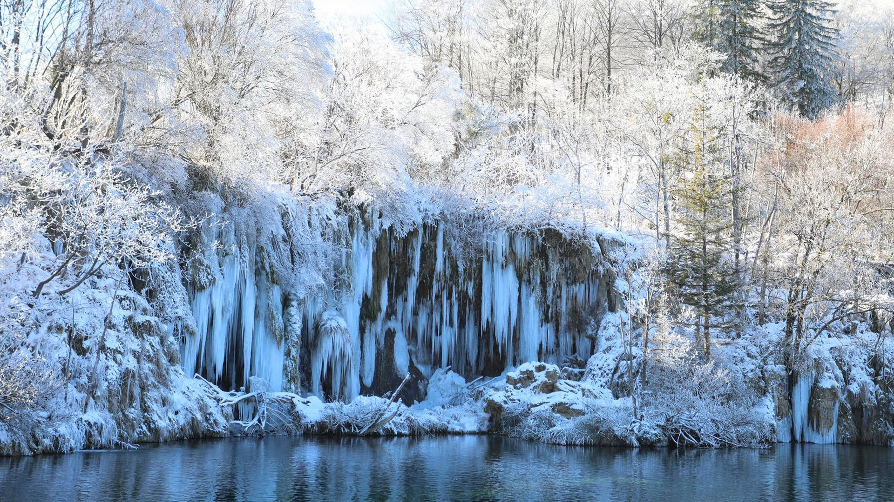

Plitvička jezera




Nacionalni park Plitvička jezera najstariji je i najpoznatiji nacionalni park u Hrvatskoj. Prepoznatljiv je po sustavu međusobno povezanih jezera, sedrenim barijerama i slapovima te izraženoj prirodnoj dinamici vode koja stalno mijenja krajolik. Ovdje se priroda i voda neprestano nadopunjuju, a zvuk slapova prati posjetitelje na gotovo svakom koraku.
Park se prostire u Lici i obiluje šumskim ekosustavima, bogatom bioraznolikošću i osjetljivim staništima. Drvene staze i vidikovci omogućuju obilazak uz minimalan utjecaj na prirodu, a posjetitelji mogu doživjeti jedinstven spoj vode, krša i šume. Hodanje uz jezera otkriva različite prizore ovisno o godišnjem dobu, svjetlu i količini vode.
Središte parka čini sustav od šesnaest jezera, podijeljenih na Gornja i Donja jezera. Gornja jezera smještena su na višim terasama i obavijena su šumama, dok Donja jezera oblikuju dramatičan kanjon s visokim stijenskim liticama. Jezera su međusobno povezana slapovima i kaskadama, a njihova boja v arira od smaragdno zelene do duboko plave, ovisno o svjetlu, mineralima i mikroorganizmima.
Sedrene barijere, koje nastaju taloženjem kalcijeva karbonata, ključni su fenomen Plitvica. Upravo one oblikuju slapove i stalno preuređuju vodeni sustav, stvarajući nova jezerca i mijenjajući rubove staza. Taj proces je spor, ali trajan, pa park predstavlja živu laboratorijsku učionicu prirodnih procesa. Zbog toga su pravila posjećivanja stroga, kako bi se osjetljivi sustav očuvao.
Šumska područja parka dom su mnogim biljnim i životinjskim vrstama. U šumama rastu bukve, jele i smreke, a u proljeće se pojavljuje bogat podraste s brojnim cvjetnim vrstama. Park je poznat po raznolikosti ptica, vodozemaca i malih sisavaca, a u širem području obitavaju i velike zvijeri poput medvjeda, vuka i risa. Iako ih posjetitelji rijetko vide, njihov miran suživot s prirodom dio je identiteta parka.
Plitvička jezera nalaze se na važnom hidrološkom području. Voda se napaja iz krških izvora i ponora, a dva glavna vodotoka, Bijela i Crna rijeka, spajaju se i tvore Koranu. Kvaliteta vode izrazito je visoka, što dodatno naglašava potrebu za zaštitom i odgovornim ponašanjem. Upravo zbog čistoće i jedinstvenosti krajolika park je upisan na UNESCO-ov Popis svjetske baštine.
Kretanje kroz park omogućeno je mrežom pješačkih staza, drvenih šetnica i vidikovaca. Pojedine staze prate same obale jezera, dok druge vode kroz šumu i otvaraju panoramske poglede. Vožnja električnim brodićem po jezerima dodatno obogaćuje doživljaj, a kratke panoramske vožnje omogućuju lakše kretanje i uštedu vremena. Sve su rute planirane tako da posjetitelje vode kroz najljepše dijelove parka.
Svako godišnje doba donosi poseban ugođaj. U proljeće park oživi uz snažan protok vode i zelenu bujnost, ljeto donosi mirnije vodotoke i duže dane, jesen ispunjava šume toplim bojama, a zima pretvara slapove u ledene skulpture. Upravo ta sezonska promjena čini Plitvice zanimljivima tijekom cijele godine, pa se posjet može planirati prema željenom doživljaju.
Osim prirodne baštine, područje parka povezano je i s bogatom kulturnom poviješću. U okolici se nalaze tradicionalna lička sela i stare staze koje su koristili lokalni stanovnici. Kulturni krajolik čine i primjeri tradicijske arhitekture te običaji vezani uz šume, planine i vodu. Posjet parku stoga može biti i prilika za upoznavanje lokalne gastronomije, običaja i načina života.
Park se danas aktivno bavi zaštitom prirode, edukacijom i znanstvenim istraživanjima. U njegovim programima sudjeluju stručnjaci iz područja biologije, geologije, hidrologije i šumarstva, a rezultati istraživanja koriste se za očuvanje sedrenih barijera i staništa. Edukativne staze i interpretacijski sadržaji pomažu posjetiteljima razumjeti zašto je važno čuvati prirodu i kako se mogu ponašati odgovorno.
Za ugodan boravak preporučuje se planiranje obilaska unaprijed. Odabir rute ovisi o vremenu i interesima, a dobra obuća i odgovarajuća odjeća olakšavaju kretanje. Fotografiranje je dopušteno, ali se strogo zabranjuje kupanje, hranjenje životinja ili skretanje s označenih staza. Poštivanje pravila doprinosi očuvanju parka i omogućuje da buduće generacije dožive isti prirodni spektakl.
Plitvička jezera nisu samo turistička atrakcija, već mjesto koje nadahnjuje i podsjeća na vrijednost očuvane prirode. Kombinacija vode, šume i krša stvara jedinstveni mozaik pejzaža, a mir i zvuk slapova ostaju u sjećanju dugo nakon posjeta. To je prostor u kojem se može usporiti, promatrati priroda i doživjeti njezina ljepota bez suvišnih ukrasa.
U planiranju posjeta korisno je voditi računa o vremenskim prilikama, gužvama i osobnim preferencijama. Rano jutro nudi tišinu i mirnije staze, dok kasno poslijepodne donosi mekše svjetlo za fotografiranje. Bez obzira na doba dana, Plitvička jezera ostavljaju snažan dojam, a svaki korak uz vodu otkriva nove detalje koji potiču na ponovno vraćanje.